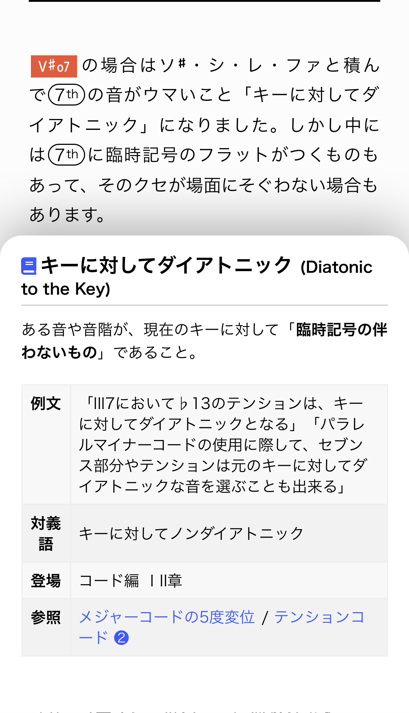

本页面将介绍本网站的基本功能与相关使用说明。
关于网站的使用
关于音频文件
音频文件将通过如下播放器进行播放：
若在页面完全加载完成之前尝试播放音频，有时可能会出现播放异常。如果遇到无法正常播放的情况，刷新页面通常即可解决。
关于外部音频的嵌入
在引用实际商业音乐案例时，除了 YouTube 之外，我们还会广泛使用 Apple Music 与 Spotify 的试听预览链接。
这两个流媒体平台即使在未登录状态下也能直接播放 30 秒试听片段，且文中所选曲目的核心讲解要点均精确浓缩在这 30 秒之内，因此你完全无需登录账号。相反，如果在已登录状态下播放完整曲目，反而可能难以迅速定位到所讨论的具体小节，因此强烈建议在未登录状态下浏览。
这些流媒体平台的嵌入音频受网络环境影响，偶尔可能会加载失败。若遇到此情况，请尝试刷新页面；若依然未解决，可稍后再试。
关于乐谱图像

和弦篇等章节中的大部分乐谱图像均采用“SVG”矢量文件格式。SVG 作为矢量图，与传统的 JPG 或 PNG 不同，其最大的特点在于无论如何放大缩放都不会模糊失真。
这一特性保证了无论在何种分辨率的屏幕上都能获得极致清晰的显示效果。虽然极老旧的 Internet Explorer 或老旧安卓设备可能存在兼容性问题，但鉴于矢量格式已成为现代 Web 的标准规范，本站不再专门针对过时的旧版浏览器做特殊降级兼容。
关于术语浮窗帮助功能
学习音乐理论的最大拦路虎之一，就是“在解释专业术语的句子中，又冒出了新的不懂的专业术语”。为了彻底解决这一痛点，本站研发并内置了交互式即时帮助功能。
・ ・（外壳音）
↑在电脑端请将鼠标光标悬停在文字上方，在手机移动端请轻触点击。屏幕上应当会弹出对应的术语释义卡片。这就是本站的帮助功能。为了保证长文排版的连贯与阅读舒适度，我们在视觉样式上未添加突兀的特殊标记；阅读时若遇到不确定的专业词汇，不妨将鼠标悬停其上，碰碰运气看是否已被收录在词库中。
在移动端设备上，若正确触发，屏幕底部通常会浮现类似如下卡片式的交互层：

在移动端，轻触弹出卡片以外的空白区域即可关闭卡片。
当然，如果连浮窗解释里的词汇都是陌生的，那确实让人抓狂😭 此时推荐前往术语索引页面系统查找。另外，系统设定为随着章节的深入，越发基础的词汇将逐步取消浮窗提示。这是因为在高级篇章中，如果连最基础的初级词汇都频繁弹出浮窗，反而会干扰高阶阅读体验。
关于脚注与出处引用
除术语浮窗外，正文中还会使用脚注来提供深度补充信息。→ [1]
使用脚注的场景通常包括两类：一是针对可能引发进阶思考的特定细节提供防杠与扩展说明，二是在涉及学术观点时标注严肃的文献出处。此外，只有当内容引用自冷门的西文原版理论专著或学术论文、读者极难自行检索验证时，才会特别注明文献出处。 这些脚注本质上是“为追根究底的硬核学习者准备的选读补遗”，即使略过不读，也丝毫不会影响对主体乐理逻辑的顺畅理解。
关于显示设置选项
已登录用户可在“编辑个人资料与设置”页面中调整各项个性化显示偏好：
- 正文字体 可在多种字体方案中自由切换阅读字体。
- 突出显示帮助词汇 为所有支持浮窗帮助的专业关键词添加虚线下划线，直观明确哪些词汇可点击查看。
- 通用无障碍色彩方案（Universal Design） 减少红绿对比配色，转而采用明度反差清晰的蓝阶与条纹纹理设计，对色觉障碍者更为友好。
关于音乐理论的术语体例
关于语言表述惯例
音乐理论术语来源极为广泛多元。有的习惯直接沿用英文，有的中文/日文译名流传更广，有的属于本土特有概念，还有的直接继承自德语原词……在原文站点的排版中，通常按如下层级标记：
根音 Root / ルート
当汉字译名后附带片假名时，表示在日韩及亚洲流行音乐圈中，该英文术语与音译外来语同样极其通用。
拍子 Time
当仅标出汉字与英文对照、未列片假名音译时，表示在日常交流中更倾向于直接称呼其汉字全称，英文仅作国际学术对照参考。
持续音 / Pedal Point
仅出现“片假名或纯英文”时，通常意味着该概念在特定语境下缺乏公认统一的直译，或者业界更普遍直接习惯使用英文原词称呼。
在中文语境下，古典乐界通常偏好严谨的汉字意译（如“主音”、“属七和弦”），而现代流行与爵士乐圈则极其习惯使用英文原词或缩写（如“Root”、“Dominant 7th”）。学习者只需选择自己最得心应手、最易沟通的习惯记忆即可。